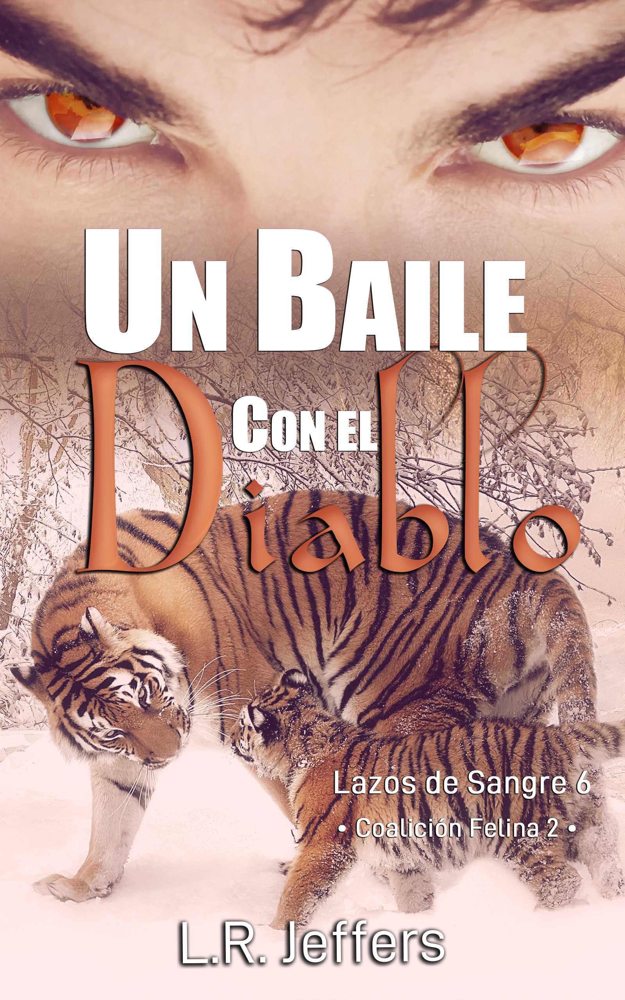

Un baile con el diablo
«Cuando llueve, siempre lo hace sobre mojado.»
También disponible en formato digital y papel.
Sinopsis
Eirian Donovan vive huyendo constantemente, no solo de la coalición de leonas psicópatas lideradas por su madre, sino también de una pareja destinada que se rehúsa a conocer. Aunque no desea un emparejamiento forzado, sabe que será sometido a este en cuanto su compañera descubra la verdad. Por eso se refugia en las calles y se mete en peleas clandestinas para poder comer sin necesidad de recurrir a su verdadera naturaleza. Y creyó estar haciéndolo bien hasta ahora.
Es evidente que… no tanto.
La noche en que La Jaula Sangrienta es inundada por el aroma del que ha estado huyendo durante los últimos dos años, Eirian sabe que el camino ha llegado a su fin. Sin embargo, nada es como parece y su tan temida compañera en realidad no es una mujer, sino un cambiaformas de tigre en cuyos ojos arde el infierno.
Leer extracto gratuito
Prólogo
Rojo. La sangre aún caliente goteaba de sus dedos al charco que había a sus pies. Aunque pintaba cada rincón como un retrato horripilante de su locura, no era suficiente para ahogar las voces que lo torturaban ni para mitigar el dolor.
«Mata —susurró el demonio con voz burlona—. Sabes que quieres hacerlo. Mata. Mata. Mata».
Incapaz de resistirse —nada más el cielo sabía cuánto luchó para no entregarse a sus retorcidos deseos—, asintió reconociendo su verdadera naturaleza: un monstruo, sucio y cruel, que se arrastraba por las esquinas igual que una serpiente.
Su esposa siempre había tenido razón.
Maldito por los dioses y la tierra. Un ángel caído sin posibilidad de ser salvado.
«Mata. Mata. Mata. Mata», la voz que nunca se detuvo, siguió presionándolo, aunque ya hubiera cruzado esa línea más allá de la cual no había retorno.
Levantando la cabeza que sostenía entre las manos, sonrió complacido al encontrarse con aquellos ojos carentes de vida, que lo miraban sin mirar. El absoluto asombro de la mujer le pareció fascinante; todavía más, el horror reflejado en el rostro que siempre lo despreció.
Acercó su cara y suspiró antes de unir los labios en un beso. Le pareció más cálido y reconfortante que nunca.
Al parecer, únicamente necesitó asesinarla para ser amado por su compañera.
💡 Este prólogo representa una muestra del tono oscuro de la novela. Para continuar la historia, disponible en Amazon.
Contenido exclusivo
Estamos reescribiendo Un baile con el diablo para ofrecerte la mejor experiencia. Cuando la nueva versión esté lista, añadiremos aquí:
- ✨ Ficha detallada de Eirian y Ash
- 🎵 Playlist oficial de la historia
- 🎁 Escena eliminada o POV alternativo
¿Quieres ser el primero en saber cuándo está listo? Únete al Círculo Oscuro.